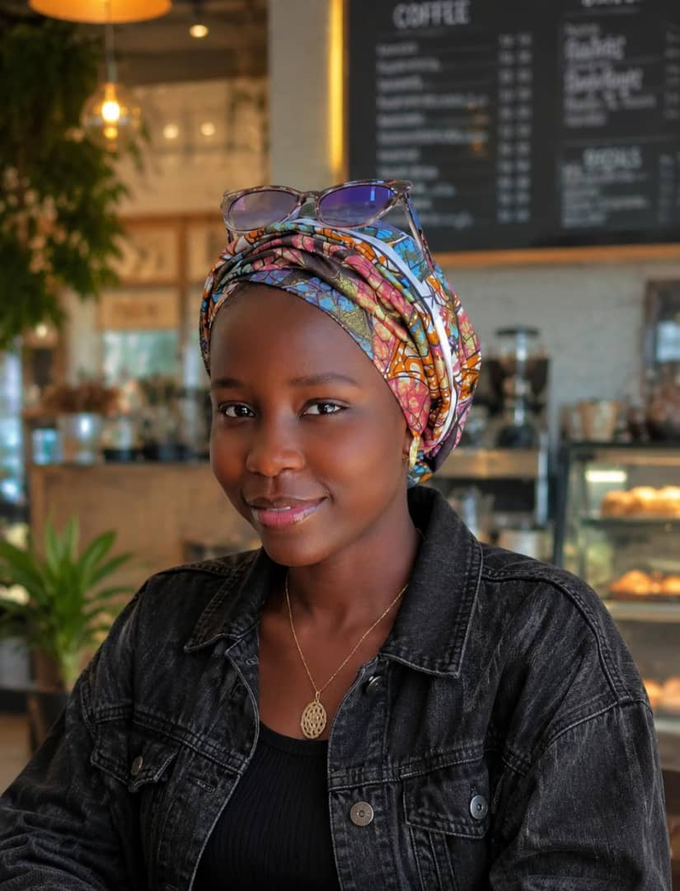

There's something I've been wanting to tell you…
Something my heart has been holding
for a very long time.
And today… I finally found the courage to say it.
This is for you.
tap anywhere to continue
chapter two
How It All Started
Fadimatubinta… I don't know if you ever realized this. But our story — at least from my side — started much earlier than you probably think.
It was during our first semester. Somewhere between lectures, hallways and perfectly ordinary days — in moments you probably don't even remember — something quietly changed in me. I didn't plan it. I never woke up one morning and decided to have a crush on you. It just happened… slowly, softly, the way the most important things usually do.
I was already crushing on you back then. And I had no idea what to do with that feeling, because I had never carried anything like it before. So I did the only thing I could think of at the time — I told your friend Okoly, hoping that saying it out loud to someone might make the feeling feel smaller.
It didn't. It only grew.
I don't know if you remember when Pokoly told you that one of his friends had a crush on you…
Maybe at that time, you didn't know that friend was me.
And maybe you never imagined that the person hiding those feelings was someone who had been too shy to say them directly.
I remember wondering what you thought when you heard it. Whether you laughed. Whether you tried to guess who it was. Whether my name ever crossed your mind, even for a second. I never asked — I was too afraid of the answer.
Even during this second semester, my feelings were still there. They hadn't faded the way I half-hoped and half-feared they would. If anything, they had grown quieter and deeper — the kind of feeling that settles into your chest and simply refuses to leave.
I told Hakuna too, and he even tried to help me. He really did.
But there was always something stopping me.
Fear.
The fear of rejection.
The fear that telling you the truth might change everything.
The fear that maybe my feelings would only ever remain mine.
Sometimes, the hardest thing isn't falling for someone.
Sometimes, the hardest thing is finding the courage to tell them.
And maybe that's exactly what happened to me.
I kept telling myself that one day, I would tell you. But one day kept becoming another day. And before I knew it, I had been carrying these feelings quietly for a long time — through one whole semester, and then another.
But now… I think you deserve to know the truth.
chapter three
The Little Things I Admire About You
Maybe you didn't notice…
But I noticed you.
Sometimes, it's the smallest things about a person that slowly find their way into your heart.
A smile.
A conversation.
A simple moment.
And suddenly, someone becomes more special than you ever expected.


What I Admire About You
There are so many things I wish I had the courage to tell you earlier.
Maybe I was too quiet. Maybe I was too shy.
But silence doesn't always mean the heart has nothing to say.
Sometimes, it simply means the heart is afraid of saying too much.
And somewhere between all those little moments…
my feelings became something more.
The truth is…
Fadimatubinta…
I like you.
No…
I think it's more than that.
Now that it's said… let me say it properly. Because you deserve more than three words whispered into the dark.
I have genuinely had feelings for you since the first semester. These feelings didn't suddenly appear overnight. They didn't arrive like a storm. They grew — slowly, quietly, through small moments you probably never noticed — until one day I realized you had quietly become a part of how I saw the world.
I tried to hide them, because I was shy. I was afraid of rejection. I didn't know if you would ever feel the same way, and the thought of hearing the wrong answer kept my heart locked. But the feelings never disappeared. No matter how much time passed, they stayed. And instead of fading, they slowly grew.
I don't want to pressure you. I don't want to make you uncomfortable — not now, not ever. I simply want to finally be honest. With you, and with myself.
Fadimatubinta, I don't know what the future will look like.
I don't know if I will always have the perfect words.
But I know that what I feel for you is real.
You became someone I wanted to know more about.
Someone I wanted to see happy.
Someone whose presence could quietly make an ordinary moment feel different.
Maybe I was scared because some people are worth being nervous about.
Because when someone starts to matter to you, the possibility of rejection becomes frightening.
But today, I don't want fear to speak louder than my heart anymore.
So here I am…
Finally telling you what my heart has been trying to say for so long.
I have feelings for you, Fadimatubinta. Real feelings.
chapter five
The Kind of Love I Want to Give You
Before I ask you what I'm going to ask you, I want you to understand something about me — the kind of love I've always dreamed of giving. I've watched stories about love that stayed with me long after they ended. Not because they were perfect — but because they showed me the kind of person I want to be for you.
inspired by · my demon
In My Demon, Jeong Gu-won and Do Do-hee begin with a contract and end with something no contract could ever contain. What stayed with me wasn't the fantasy — it was the way they protected each other. The way they chose each other again and again, cared for each other in small, stubborn ways, and held on through every storm. A love built on devotion: showing up, guarding each other's heart, staying when staying is hard.
I know real life isn't My Demon.
I don't have supernatural powers like Jeong Gu-won.
And our lives won't have a perfect K-drama script.
But watching stories about love sometimes makes you think about the kind of person you want to be for someone.
inspired by · horimiya
In Horimiya, Hori and Miyamura teach each other something quiet and rare — that love can be a place where you take off every mask. Two people the world saw one way, who got to see each other truly. Comfortable silences. Care that goes beyond appearances. The safety of being exactly who you are, on your best days and your worst ones.
I don't want you to ever feel like you have to become someone else around me.
I want to know the real you.
The happy you. The tired you. The quiet you.
The version of you that doesn't always have everything figured out.
inspired by · kimi ni todoke
In Kimi ni Todoke, Kazehaya never rushes Sawako. He is patient. Kind. He doesn't try to change her — he helps her feel seen, and lets something beautiful grow at its own pace, in its own time. That's the kind of gentleness I want to learn. That's the kind of patience I want to have.
I don't want to copy someone else's love story.
I want to create our own.
I don't want to promise you a perfect life — because I know life isn't always perfect. But I want to be someone who genuinely cares.
what I can honestly promise to try to be
Someone who checks on you when you're tired.
Someone who reminds you to rest when you've been working too hard.
Someone who celebrates your achievements.
Someone who listens when you need someone to talk to.
Someone who tries to make you smile when life becomes difficult.
Someone who respects your boundaries and your feelings.
Someone who supports your dreams instead of standing in their way.
on the days that aren't easy
I don't want to love only the version of you that is always happy.
I want to understand the days when you're tired too.
The days when you're stressed.
The days when you don't feel like talking.
And even the days when you simply need space.
what caring means to me
Because caring about someone doesn't mean trying to control them.
It means respecting them.
Understanding them.
And being there in the ways they need you to be.
Maybe our story doesn't need to look like a K-drama…
Maybe it can be something even more beautiful…
Because it will be ours.
I've kept this in my heart for a very long time…
And now that you've reached this part of my heart…
There is only one question left.
Fadimatubinta
Jibrin Abdullahi
I don't know exactly where our story will take us. I don't want to make promises that sound beautiful today but mean nothing tomorrow. But I know that I would genuinely love the opportunity to know you more. To understand you. To make you smile. To support you. And to create beautiful memories together.
I want to celebrate your good days with you. And when life becomes difficult, I want you to know that you don't always have to face everything alone.
I want to care about your happiness.
I want to respect your feelings.
I want to support your dreams.
And I want to appreciate the person you are.
I don't expect you to be perfect — and I know that I am not perfect either. But I am willing to be genuine. I am willing to communicate. I am willing to listen. I am willing to learn. And if we both choose to give this a chance, I am willing to put effort into something beautiful.
So, Fadimatubinta…
I don't want to keep this in my heart anymore.
Would you let me be the one who gets to love you, care for you, and create beautiful memories with you?
Would you give me a chance to be more than just the guy who secretly had a crush on you?
chapter seven
Your Answer
Whatever it is, Fadimatubinta…
my heart is listening.
take all the time you need — both answers are safe here.
Of course, Fadimatubinta…
You don't have to rush.
Your feelings matter too.
Take all the time you need.
Whatever your answer is, I respect you.
Thank you for taking the time to listen to my heart.
And if one day your heart changes its mind… this page will be waiting.
Fadimatubinta…
You just made me the happiest person!
Thank you for giving our story a chance.
This isn't the end…
Maybe it's the beginning of something beautiful.
what I promise you
I promise to always try to make you feel appreciated.
To respect you.
To listen to you.
To celebrate you.
To support your dreams.
And to create memories with you that we can one day look back on and smile about.
and above everything else — today
Happy Birthday,
Fadimatubinta
Jibrin Abdullahi
Today the whole sky feels a little brighter — because it's your day, and you deserve all the beauty in it.
Thank you for being part of my story…
And maybe… welcome to the beginning of ours.
chapter nine · to be continued
Our Story
an almost-empty album —
waiting for the memories we haven't made yet.

This page is almost empty — and that's the point. Every space here is a memory waiting to happen.
— written for Fadimatubinta,
with everything I couldn't quite say out loud.